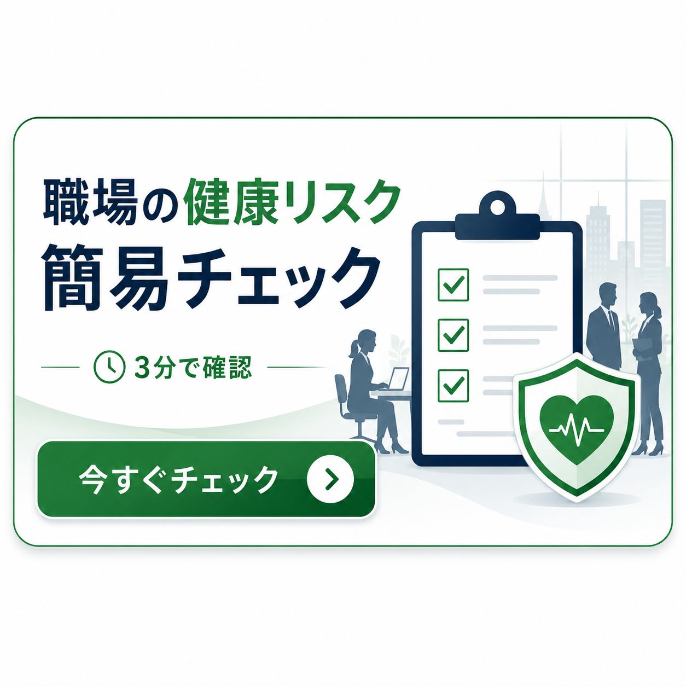

法人向け健康支援サービス
従業員の腰痛・転倒・ケガを防ぎ、長く安全に働ける職場づくりを支援します
理学療法士が、従業員の身体機能・作業動作・職場環境を評価し、腰痛・転倒・労災リスクの予防を支援します。
- 専門性
- 理学療法士の視点
- 対象
- 企業・従業員
- 目的
- 予防と職場づくり
こんなお悩みはありませんか？
身体の不調や安全面の不安を、会社全体の課題として整理します。
プライズネスの支援方法
身体機能と職場動作の両面から、リスクを見える化します。
医療行為や治療ではなく、従業員が安全に働き続けられる職場づくりを支援する法人向けサービスです。
見る
職場動作、姿勢、環境、作業導線を確認します。
測る
身体機能チェックや腰痛・転倒リスク評価を行います。
整える
運動指導、職場改善提案、健康セミナーにつなげます。
サービス内容
現場に合わせて、必要な支援を組み合わせます。
職場動作の確認
介助、運搬、立ち作業、デスクワークなどの姿勢や動作を確認します。
身体機能チェック
筋力、柔軟性、バランス、歩行など、働くうえで必要な機能を確認します。
健康セミナー
腰痛予防、転倒予防、疲労対策、姿勢改善などをテーマに実施します。
職場の健康リスク簡易チェック
30項目のチェックは専用ページで確認できます。
腰痛・転倒・労災リスクにつながりやすい職場の状態を、3分程度で簡易確認できます。結果は診断ではなく、相談や職場改善を始めるための目安です。
今すぐチェックする
料金プラン
まずは小さく始めて、必要に応じて継続支援へ。
単発セミナー
55,000円〜腰痛予防、転倒予防、姿勢改善などをテーマに実施します。
職場訪問評価
132,000円〜作業現場を確認し、身体負担や環境面のリスクを整理します。
定期サポート
月額88,000円〜訪問、評価、改善提案、セミナーを組み合わせて支援します。
補助金について
エイジフレンドリー補助金の活用もご相談ください
高年齢労働者の転倒・腰痛・身体的負担の予防に取り組む中小企業では、エイジフレンドリー補助金を活用できる可能性があります。
補助金対象を保証するものではありません。
補助金活用について相談する代表メッセージ
従業員の不調を、本人だけの問題で終わらせない。
私たちは、従業員の身体不調やケガを「本人の問題」だけで終わらせず、職場環境や作業動作、身体機能の両面から確認することが重要だと考えています。
理学療法士の専門的な視点で、従業員が長く安全に働き続けられる職場づくりを支援します。
成田 悟志
理学療法士／株式会社プライズライフ 代表
医療機関での臨床経験をもとに、リハビリジムプライズネスを運営。従業員の身体機能、作業動作、職場環境を総合的に確認し、腰痛・転倒・ケガ予防に向けた健康経営サポートを行っています。
お問い合わせ
無料相談・資料請求・訪問相談のご相談はこちら。
企業規模、職種、現在の課題に合わせて、導入しやすい形をご提案します。まずは「何から始めるべきか」の整理からご相談ください。